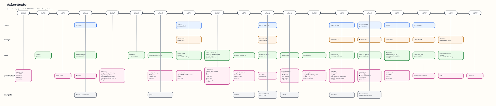

| # | Model | Organization | Release | Key Technical Highlights | Modalities | Actions |
|---|
Monthly Release Cadence
Volume of frontier technical reports published over time (2025-01 ~ 2026-07)
AI Lab Share of Reports
Distribution across global AI frontier research organizations
Capability & Modality Breakdown
Focus areas across reasoning, coding agents, multimodal vision, video, and medical verticals
High-Resolution Ecosystem Diagrams
Original curated roadmap vector diagrams from repository
